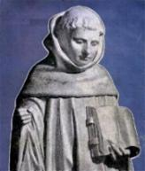
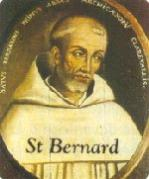
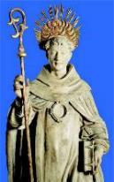

Na História da Igreja surgiram muitos homens e mulheres ilustres, inteligentes e sábios. São Bernardo atingiu um expoente maior! Com a grandeza de seu amor a DEUS, através de seus escritos brilhantes, objetivos e uma oratória influente e iluminada, cativou pessoas e nações de todo o mundo.



"ÍNDICE"
IDEAL DE MONGE (Familiares, Nascimento e Juventude, Mosteiro de Cister)
VALE DA LUZ (Fundação de Claraval, A Mão de DEUS)
SANTO HOMEM (Mediador dos Necessitados, Escritor e Orador Famoso, Grave Enfermidade)
ELEIÇÃO DO PAPA (Cisma Anacletino)
ESPADA DE DEUS (Divulgador da Segunda Cruzada, Últimos Anos de Vida)
LINKS e BUSCAS